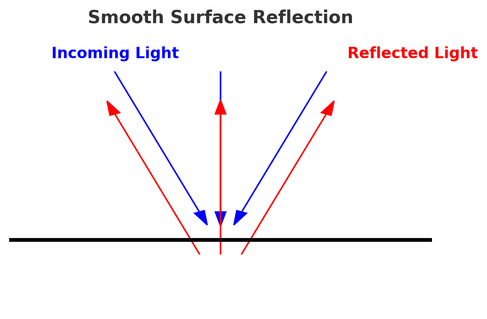
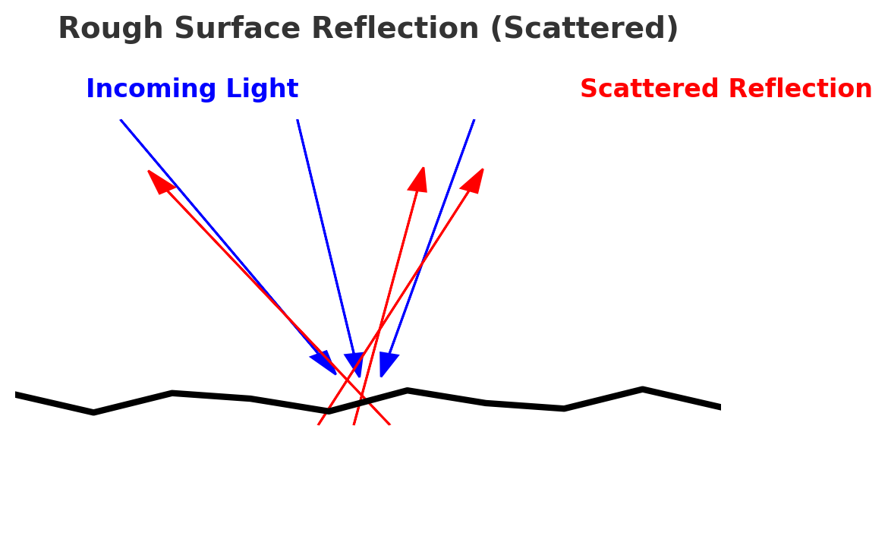

What Causes Reflection?
Reflection occurs when light interacts with a surface. The direction of reflection follows the Law of Reflection: Angle of Incidence = Angle of Reflection.
Why Do Smooth Surfaces Reflect?
On a smooth surface, all points reflect light in a uniform direction, creating a clear, mirror-like reflection.
Why Do Rough Surfaces Scatter Light?
On rough surfaces, tiny irregularities cause light to reflect in multiple directions, leading to diffuse reflection.
Does Water Reflect Light?
Yes! When water is calm, it acts as a smooth surface, creating a mirror effect. However, waves disturb the uniformity, causing scattered reflections.